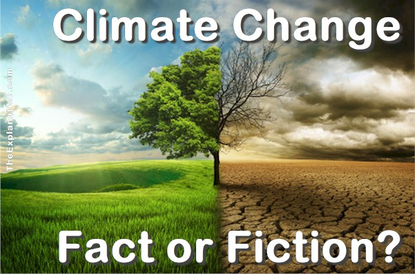

I am an enthusiastic and aspiring data analyst with 8+ years of experience as a Test Analyst.
I have worked in the capacity of individual contributor, Test analyst, Test Lead and Project Execution Owner.
I am an analytical thinker with the ability to dig and find facts hidden within large data sets.
I can add value to others by solving the problems in an innovative way.
I have demonstrated expertise in effective collaboration working with cross-functional teams to achieve common goals.
While working in previous roles I got an opportunity to closely work with Reference Data which allowed me to enhance my
knowledge around the way real-time data being analysed and presented by project business analysts.
This inspired me to build my career in Data Analytics. I am looking forward to working with my new passion.
ASPIRING DATA ANALYST | BUSINESS ACUMEN

Projects
-
Credit Card Customer Churn
-

Climate change Fact Or Fiction!
-
World Earthquakes Analysis
-
Divvy Bike Share Data Cleaning and Extraction Project using PostgreSQL
Contact Me
I am happy to connect with you for any data analyst opportunity. You can connect me via LinkedIn messaging at LinkedIn